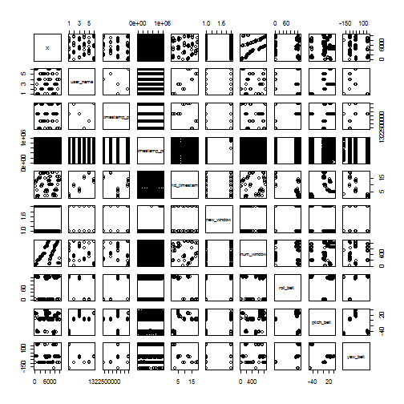
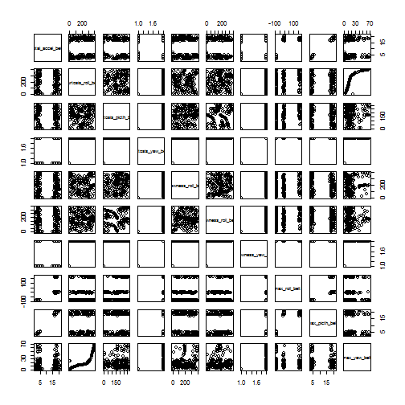
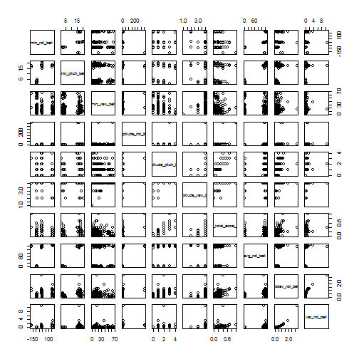
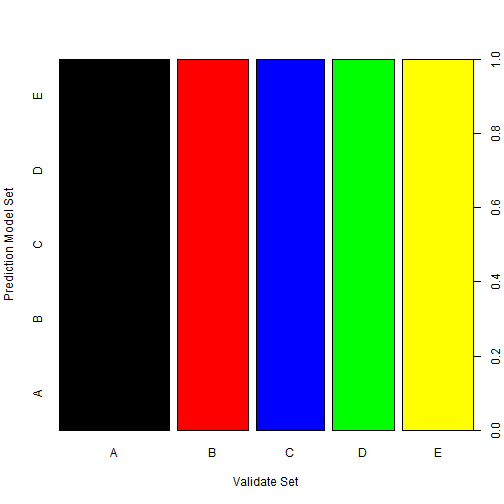

Practical Machine Learning: Prediction Model Assignment Write-up
Ron Rick Chua
Monday, August 18, 2014
Synopsis:
Using devices such as Jawbone Up, Nike FuelBand, and Fitbit it is now possible to collect a large amount of data about personal activity relatively inexpensively. These type of devices are part of the quantified self movement – a group of enthusiasts who take measurements about themselves regularly to improve their health, to find patterns in their behavior, or because they are tech geeks. One thing that people regularly do is quantify how much of a particular activity they do, but they rarely quantify how well they do it. In this project, your goal will be to use data from accelerometers on the belt, forearm, arm, and dumbell of 6 participants. They were asked to perform barbell lifts correctly and incorrectly in 5 different ways. More information is available from the website here: http://groupware.les.inf.puc-rio.br/har (see the section on the Weight Lifting Exercise Dataset).
We will use the data mentioned above to develop a predictive model for this classes.
Loading library used.
library(ggplot2)
library(lattice)
library(caret)
library(randomForest)
library(rpart)
Clearing Workspace
rm(list=ls())
Loading the Data Sets of Testing and Training to R.
TrainingSet <-read.csv("pml-training.csv")
TestingSet <-read.csv("pml-testing.csv" )
Exploring the Data Set
For Training Set:
# Number of rows:
nrow(TrainingSet)
## [1] 19622
# Number of columns:
ncol(TrainingSet)
## [1] 160
#Summary details:
summary(TrainingSet[,c(1:2,159:160)])
## X user_name magnet_forearm_z classe
## Min. : 1 adelmo :3892 Min. :-973 A:5580
## 1st Qu.: 4906 carlitos:3112 1st Qu.: 191 B:3797
## Median : 9812 charles :3536 Median : 511 C:3422
## Mean : 9812 eurico :3070 Mean : 394 D:3216
## 3rd Qu.:14717 jeremy :3402 3rd Qu.: 653 E:3607
## Max. :19622 pedro :2610 Max. :1090
Using a Scatterplot Matrices for visual reference
pairs(TrainingSet[1:10000,1:10])

pairs(TrainingSet[1:10000,11:20])

pairs(TrainingSet[1:10000,21:30])

Getting and Cleaning the Data Set
There are 160 columns in the Training Set, and we will be excluding columns with NA values.
NewTraining<-TrainingSet
NewTraining[ NewTraining == '' | NewTraining == 'NA'] <- NA
indx <-which(colSums(is.na(NewTraining))!=0)
NewTraining<-NewTraining[, -indx]
NewTraining<-NewTraining[,-(1:7)]
Validate Data Set
Creating a Data set that are Valid, This is for Cross validating with the Training Set.
InTraining <- createDataPartition(y=NewTraining$classe,p=0.70,list=FALSE)
NewTraining <- NewTraining[InTraining,]
ValidateSet <- NewTraining[-InTraining,]
Prediction Model Set
Random Forest we will be using to train our Prediction Model set to predict the weight lifting quality in the Training Set.
Pmodel <- train(classe~., data=NewTraining, method = "rf", tuneLength = 1, ntree = 25)
print(Pmodel)
## Random Forest
##
## 13737 samples
## 52 predictors
## 5 classes: 'A', 'B', 'C', 'D', 'E'
##
## No pre-processing
## Resampling: Bootstrapped (25 reps)
##
## Summary of sample sizes: 13737, 13737, 13737, 13737, 13737, 13737, ...
##
## Resampling results
##
## Accuracy Kappa Accuracy SD Kappa SD
## 1 1 0.002 0.002
##
## Tuning parameter 'mtry' was held constant at a value of 7
##
Evaluating the Model
Using Confussion Matrix to evaluate the Prediction Model set versus the Validate Data set.
confusionMatrix(predict(Pmodel, ValidateSet), ValidateSet$classe)
## Confusion Matrix and Statistics
##
## Reference
## Prediction A B C D E
## A 1187 0 0 0 0
## B 0 773 0 0 0
## C 0 0 735 0 0
## D 0 0 0 672 0
## E 0 0 0 0 765
##
## Overall Statistics
##
## Accuracy : 1
## 95% CI : (0.999, 1)
## No Information Rate : 0.287
## P-Value [Acc > NIR] : <2e-16
##
## Kappa : 1
## Mcnemar's Test P-Value : NA
##
## Statistics by Class:
##
## Class: A Class: B Class: C Class: D Class: E
## Sensitivity 1.000 1.000 1.000 1.000 1.000
## Specificity 1.000 1.000 1.000 1.000 1.000
## Pos Pred Value 1.000 1.000 1.000 1.000 1.000
## Neg Pred Value 1.000 1.000 1.000 1.000 1.000
## Prevalence 0.287 0.187 0.178 0.163 0.185
## Detection Rate 0.287 0.187 0.178 0.163 0.185
## Detection Prevalence 0.287 0.187 0.178 0.163 0.185
## Balanced Accuracy 1.000 1.000 1.000 1.000 1.000
Visual Representation of accuracy
plot(predict(Pmodel,newdata=ValidateSet[,-ncol(ValidateSet)]),ValidateSet$classe, xlab="Validate Set", ylab="Prediction Model Set",col = c("black","red", "blue","green","yellow"))

Note on Class:
A: Exactly according to the specification
B: Throwing the elbows to the front
C: Lifting the dumbbell only halfway
D: Lowering the dumbbell only halfway
E: Throwing the hips to the front
Compuring for the Accuracy of the Model
accurate <- c(as.numeric(predict(Pmodel,newdata=ValidateSet[,-ncol(ValidateSet)])==ValidateSet$classe))
MAccuracy <- sum(accurate)*100/nrow(ValidateSet)
message("Accuracy of Prediction Model set VS Validate Data set = ", format(round(MAccuracy, 2), nsmall=2),"%")
## Accuracy of Prediction Model set VS Validate Data set = 100.00%
Conclusion
A 100% accuracy was computed here, but caution must be taken due to the use of Random forest, tends to Overfitting.
Predictions on the testing set:
For Testing Set:
# Number of rows:
nrow(TestingSet)
## [1] 20
# Number of columns:
ncol(TestingSet)
## [1] 160
# Summary details:
summary(TestingSet[,c(1:2,159:160)])
## X user_name magnet_forearm_z problem_id
## Min. : 1.00 adelmo :1 Min. :-32 Min. : 1.00
## 1st Qu.: 5.75 carlitos:3 1st Qu.:275 1st Qu.: 5.75
## Median :10.50 charles :1 Median :492 Median :10.50
## Mean :10.50 eurico :4 Mean :460 Mean :10.50
## 3rd Qu.:15.25 jeremy :8 3rd Qu.:662 3rd Qu.:15.25
## Max. :20.00 pedro :3 Max. :884 Max. :20.00
Results of the Prediction to Testing Set
Ptest<-predict(Pmodel, TestingSet)
print(Ptest)
## [1] B A B A A E D B A A B C B A E E A B B B
## Levels: A B C D E
References
The Data used for this project can be downloaded at:
Training set https://d396qusza40orc.cloudfront.net/predmachlearn/pml-training.csv
Test Set https://d396qusza40orc.cloudfront.net/predmachlearn/pml-testing.csv
I would like to cite Human Activity Recognition publication and the Major Collaborators:
- Wallace Ugulino
- Eduardo Velloso
- Hugo Fuks
Which allows us to use their data set for our course project.
Web Site: http://groupware.les.inf.puc-rio.br/har#ixzz3AR2M0igh